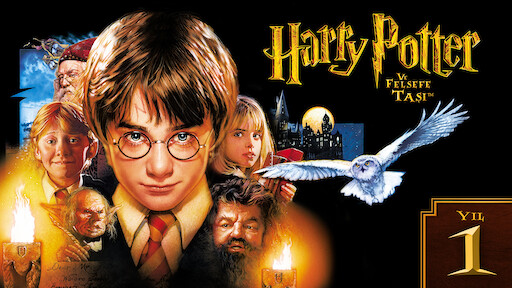

filmin özeti
|  |
Yönetmen Chris ColumbusSenarist Steve Kloves, J.K. RowlingOyuncular: Daniel Radcliffe, Rupert Grint, Emma WatsonOrijinal adı Harry Potter and the Philosopher's StoneHarry Potter'ın ailesi ağır ve şaibeli bir trafik kazasında ölmüştür. Öksüz ve yetim kalan Harry'nin sığınabileceği tek yer, arasının pek de iyi olmadığı teyzesinin yanıdır. Harry, tüm hayatı boyunca idari ailesi tarafından kötü davranışlarla büyütülür. Ancak Harry Potter artık 11 yaşındadır ve Harry'nin hayalleri ve yetenekleri günden güne su yüzüne çıkmaktadır. Kısa süre sonra Hogwarts büyücülük okuluna davet edilir. Artık tek amacı, ailesinin bu şüpheli kazasını araştırmak ve muhattaplarını cezalandırmaktır. |